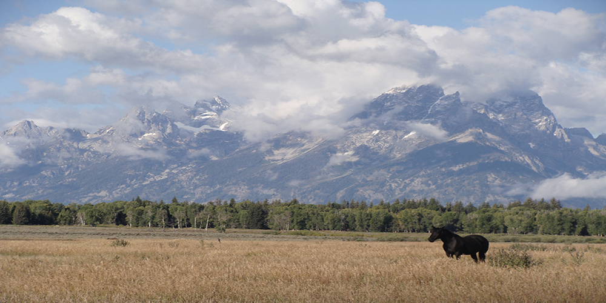

Grand Teton National Park
Grand Teton National Park is a United States National Park in northwestern Wyoming. Located at the heart of the Greater Yellowstone Ecosystem, the Rockefeller Parkway connects Grand Teton and Yellowstone National Parks. The parkway provides a natural link between the two national parks and contains features characteristic of both areas. In the parkway, the Teton Range tapers to a gentle slope at its northern edge, while rocks born of volcanic flows from Yellowstone line the Snake River and form outcroppings scattered atop hills and ridges.
The park's mountain range is very popular among climbers, hikers and photographers. Grand Teton National Park offers hiking, camping, climbing, boating, kayaking and numerous photography opportunities. During summer, wildflowers paint meadows in vivid colors. Crystalline alpine lakes fill glacial cirques, and noisy streams cascade down rocky canyons to larger lakes at the foot of the range. Running north to south, the Snake River winds its way down the valley and across this amazing scene.